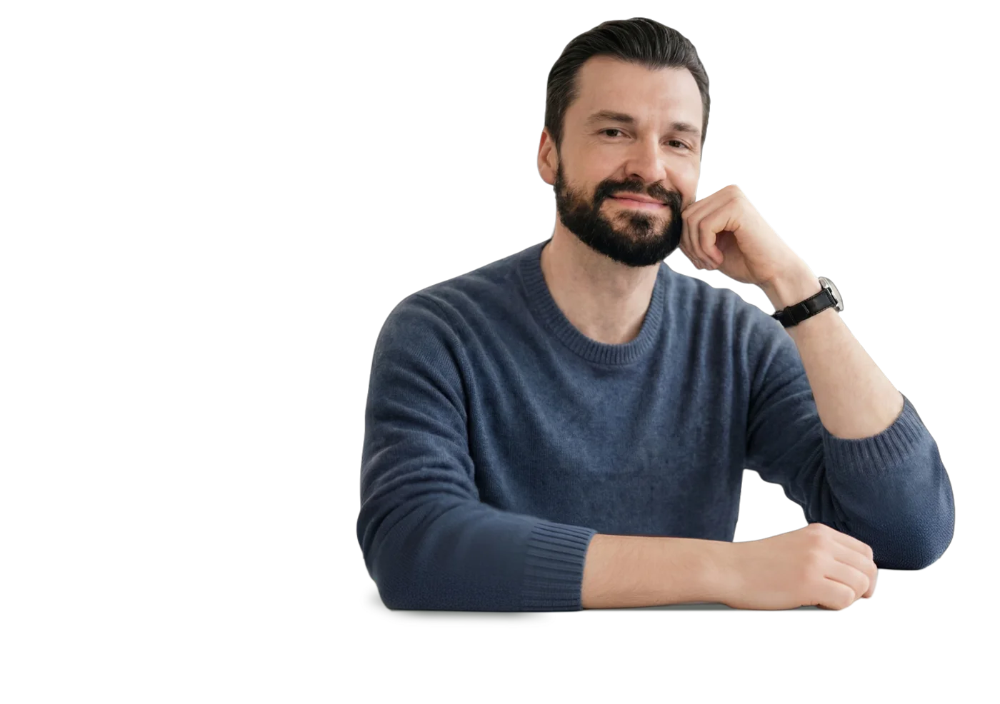
Профессиональная помощь опытного психолога
Помогу бережно разобраться в вашей ситуации и найти решение. Специализируюсь на проблемах с самооценкой, тревоге, отношениях и фобиях.
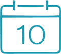
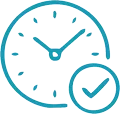
С чем я помогаю
Бывает, что внутри что-то не так, а словами это не сформулировать.
Если вы узнаёте себя хотя бы в одном пункте, с этим уже можно работать.
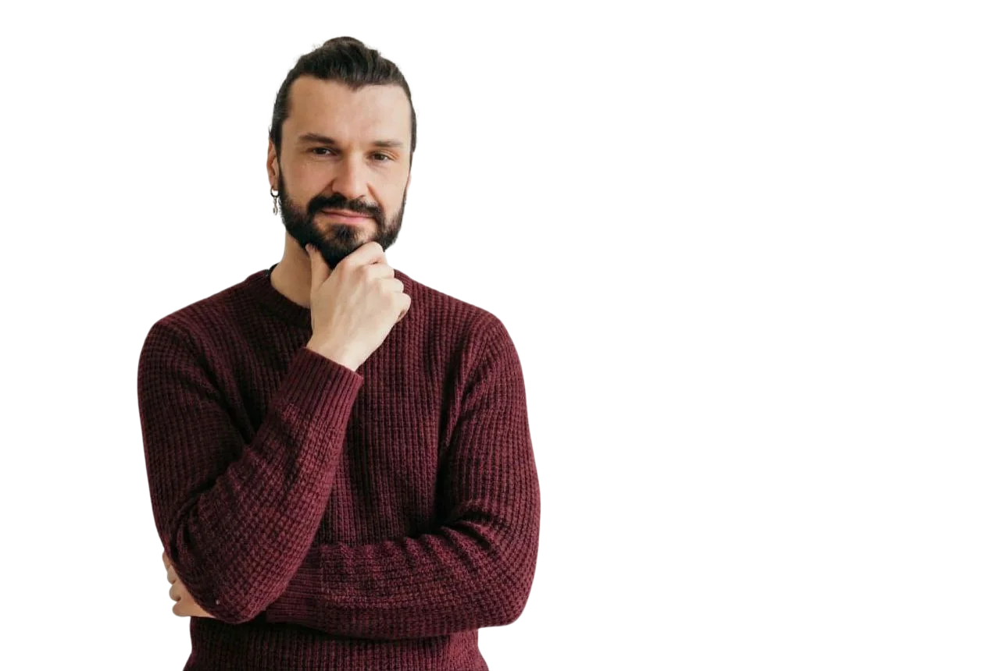
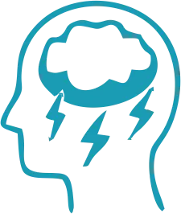
Внутренние кризисы- Панические атаки
- Тревожное расстройство
- Фобии
- Депрессия
- Эмоциональное выгорание
- Обсессивно-компульсивное расстройство (ОКР)
- Навязчивые мысли
- Селфхарм, самоповреждение
- Зависимости
- Психосоматика
- Нарушения сна
- Посттравматическое расстройство (ПТСР)
- Экзистенциальный кризис
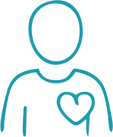
Самооценка- Постоянно сравниваешь себя с другими и почти всегда не в свою пользу
- Есть ощущение «со мной что-то не так», даже при внешних достижениях
- Обесцениваешь свои результаты и быстро забываешь успехи
- Живёшь с внутренним критиком, который не даёт расслабиться
- Чувство, что ты «недостаточно хороший / умный / сильный»
- Трудно доверять себе и своим решениям
- Зависишь от одобрения и боишься разочаровать людей
- Чувство стыда и самоконтроля
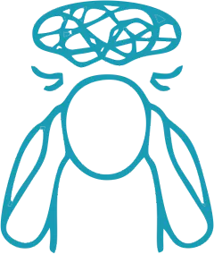
Эмоциональное состояние- Тревога, напряжение, ожидание «чего-то плохого»
- Усталость, апатия, отсутствие энергии даже после отдыха
- Подавленные эмоции, которые накапливаются и прорываются
- Постоянное напряжение и жизнь «через надо»
- Эмоциональное выгорание и ощущение пустоты
- Раздражительность, вспышки гнева или слёз без явной причины
- Внутренний хаос, перегруженность мыслями
- Потеря контакта с собой и своими истинными чувствами
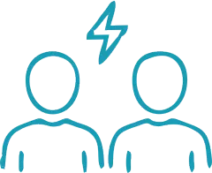
Отношения- Созависимость и страх потерять близкого
- Повторяющиеся конфликты и одни и те же сценарии
- Страх близости или, наоборот, страх одиночества
- Трудно говорить о своих потребностях и чувствах
- Постоянное подстраивание под партнёра
- Сложно говорить «нет» и отстаивать свои границы
- Обида, недосказанность, эмоциональная дистанция
- Абьюз, ревность, недоверие, контроль
- Чувство, что тебя не слышат и не понимают
- Сложности после расставаний и разводов
- Потеря себя в отношениях
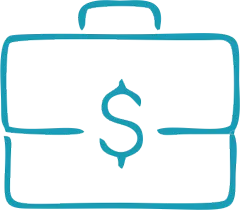
Карьера и реализация- Выгорание и потеря смысла в работе
- Страх изменений и шагов в новую сторону
- Прокрастинация и откладывание важных решений
- Сомнения в своей ценности как специалиста, даже при опыте и результатах
- Конфликты с руководством или коллегами
- Трудно зарабатывать больше без внутреннего сопротивления
- Страх проявляться, быть видимым, заявлять о себе
- Отсутствие ясного вектора и чувства «я на своём месте»
- Разрыв между внутренним потенциалом и реальной реализацией
Обо мне
Меня зовут Артём Ершов. Я практикующий психолог, в интегративном подходе.
С 2015 года помогаю людям справляться с трудностями, которые случаются в жизни и возникают в отношениях с собой, другими и миром.
Моя профессиональная позиция опирается на теплоту и эмпатию как основы терапевтического присутствия. В своей работе я выстраиваю отношения, основанные на безопасности, принятии, сочувствии, сострадании, уважении, заботе и бережности. А также ответственности и смелости встречаться с трудностями, болью и в полной мере проживать свою жизнь.
Я создаю условия, в которых вы можете свободно выражать эмоции и чувства, понять себя и сложившуюся ситуацию, найти решения. Используя проверенные подходы — IFS, КПТ, ЭОТ, EMDR — что позволяет деликатно достигать устойчивых результатов в короткие сроки.
- Более 10 лет практики в психологии
- 5000+ часов индивидуальной работы и сопровождения
- Регулярно повышаю квалификацию и углубляю практику
- Прохожу личную терапию и регулярные супервизии
Преимущества работы со мной
Записаться на консультацию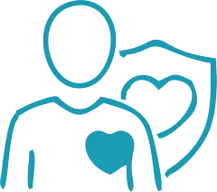
Здесь можно выдохнуть
Вы можете говорить всё, что думаете и чувствуете - без страха показаться слабым, глупым или неправильным.
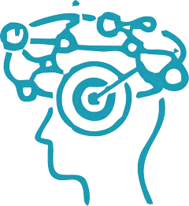
Работаю с причинами, а не симптомами
Мы разберёмся, почему вам плохо, откуда это идёт и что запускает снова и снова.

Ваш темп - ваши правила
Моя задача - создать условия, в которых изменения произойдут безопасно и в комфортном для вас ритме.
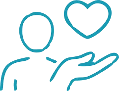
Помощь работает и после сессии
То, с чем мы работаем, сразу начинает влиять на вашу реальную жизнь: как вы общаетесь с близкими, реагируете на стресс, принимаете решения.
Как я работаю: этапы решения вашей проблемы
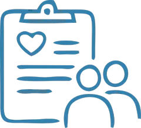
Подготовка к консультации
Мы начинаем с диагностической встречи. Вы можете рассказать о своей ситуации и почувствовать, комфортно ли вам со мной как со специалистом. Я задам уточняющие вопросы, помогу прояснить суть запроса — даже если сейчас он ощущается размытым, запутанным или трудно сформулируемым — и предложу путь решения.
Оформление сотрудничества
Если предложенный путь вам откликается, мы фиксируем формат работы: условия, длительность, стоимость и договорённости. Сотрудничество оформляем официально, через договор, чтобы у вас было ясное понимание процесса, сроков и безопасности.
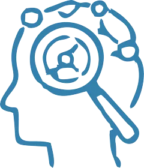
Терапевтическая работа
На сессиях мы шаг за шагом исследуем, что стоит за вашей ситуацией: эмоции, внутренние конфликты, прошлый опыт, убеждения и потребности. Выходя на причинный уровень, мы мягко и бережно прорабатываем его, снимая внутреннее напряжение и запуская реальные изменения в вашей жизни.

Прогресс
В процессе работы при помощи профессиональных инструментов и тестов мы будем отслеживать динамику, фиксировать прогресс и при необходимости корректировать направление. Я завершаю каждую сессию так, чтобы вы выходили из неё в более устойчивом и ресурсном состоянии, с ощущением опоры и ясности.
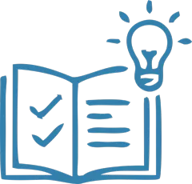
Бонус для усиления результата
В качестве рекомендаций я предлагаю индивидуальные задания для самостоятельной работы между сессиями. Эти задания не обязательны, но по опыту, клиенты, которые включаются в самостоятельную проработку, получают результат быстрее и глубже.
Записаться на консультациюМои услуги
Вы можете выбрать тот формат, который подходит именно вам сейчас: по глубине, длительности и темпу. Если важно разобраться в ситуации, получить ясность и опору — подойдёт разовая консультация или диагностика. Если вы готовы к последовательным изменениям и устойчивому результату - оптимальным выбором станут пакетные или групповые сессии.

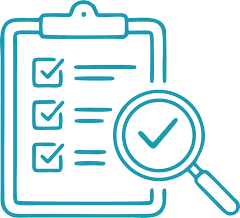
ДиагностикаОзнакомительная встреча, на которой вы можете рассказать о своей ситуации и почувствовать, комфортно ли вам со мной как со специалистом. Где я помогаю прояснить суть запроса, даже если сейчас он ощущается размытым, и даю первичное понимание возможного пути работы.
Длительность: 60 минут
Стоимость: 2 500 ₽
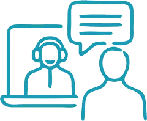
КонсультацияГлубокая работа с конкретным запросом. На консультации мы проясняем запрос, выходим на причинный уровень и мягко прорабатываем его, снижая эмоциональное и внутреннее напряжение. Даже одна сессия помогает вернуть ясность, опору и более устойчивое состояние.
Длительность: 60 минут
Стоимость: 5 000 ₽
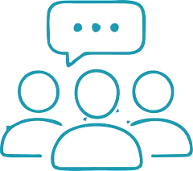
НоутингНоутинг — это практика глубокого и честного знакомства с собой настоящим. С помощью специальной методики мы будем учиться замечать и называть то, что обычно мы скрываем от людей и даже от себя: злость, страх, тревогу, одиночество, стыд.
Когда: каждое воскресенье
Длительность: ~ 1 час
Стоимость: 1 000 ₽
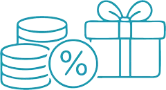
Пакеты сессийУстойчивые изменения и сопровождение во времени. Формат для тех, кто хочет глубже проработать запрос и закрепить изменения. Работа выстраивается последовательно, с вниманием к динамике состояния и прогрессу.
Отзывы моих клиентов
Ответы на часто задаваемые вопросы
Здесь собраны наиболее часто задаваемые вопросы и ответы
Задать вопрос онлайнНужно ли готовиться к консультации?
Специальной подготовки не требуется. Достаточно прийти с тем запросом или состоянием, которое сейчас волнует. Даже если сложно сформулировать проблему словами - мы спокойно разберёмся в процессе работы.
Для онлайн-сессии важно проверить стабильное интернет-соединение для видеозвонка и наличие работающих мессенджеров: VK, Телемост, Viber, WhatsApp.
Сколько сессий нужно, чтобы был результат?
Всё зависит от запроса и индивидуально от каждого клиента, но уже после первой консультации мои клиенты отмечают:
- изменение состояния с минуса на плюс;
- выход из боли (душевной и физической);
- понимание своих истинных желаний и энергию для их реализации;
- ощущение внутренней опоры;
- выход из состояния страдания и борьбы;
- способность чувствовать радость и любовь;
- желание жить и творить.
В зависимости от запроса иногда достаточно 1–3 встреч, чтобы снять острое напряжение и увидеть ясность. Для глубинных изменений и устойчивых результатов обычно требуется более длительное сопровождение.
Можно с любым запросом?
В рамках своей компетенции я работаю только со взрослыми и с теми запросами, с которыми могу обеспечить безопасную и качественную помощь. Поэтому я не веду работу с детьми, подростками и с тяжёлыми психотическими расстройствами. Если окажется, что ваш запрос относится к этим областям, я постараюсь подсказать, к какому специалисту имеет смысл обратиться.
Онлайн или очно?
Я работаю онлайн. Это удобно и конфиденциально. Вы у себя дома или в другом месте, где можете уединиться, всё равно мы создаём общее пространство.
Будет ли сессия онлайн эффективной?
Да, эффективность онлайн-работы сопоставима с очными встречами и позволяет глубоко прорабатывать запросы независимо от вашего местоположения.